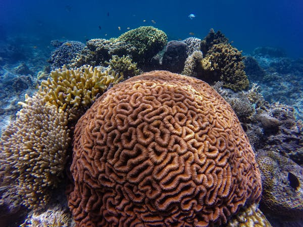
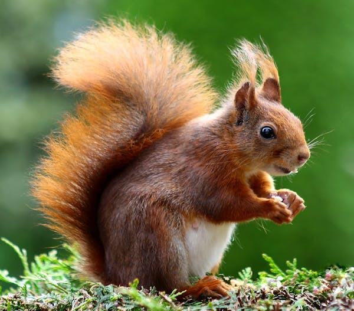
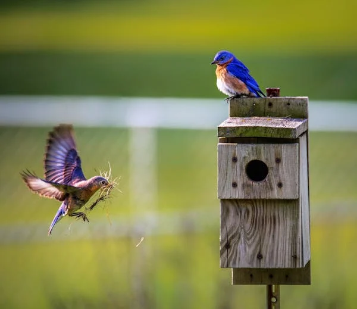
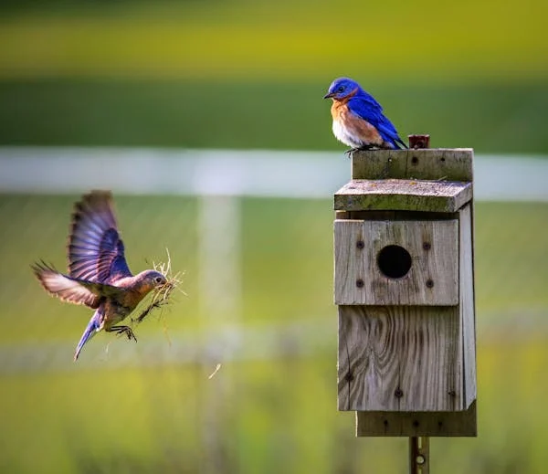
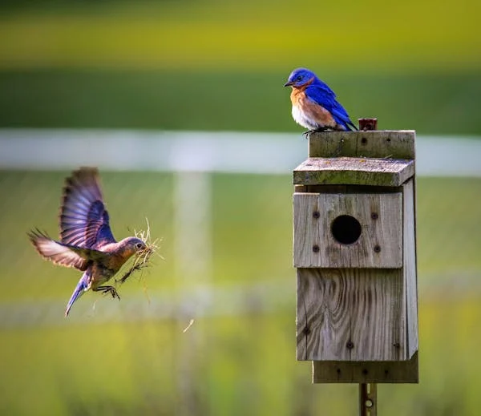
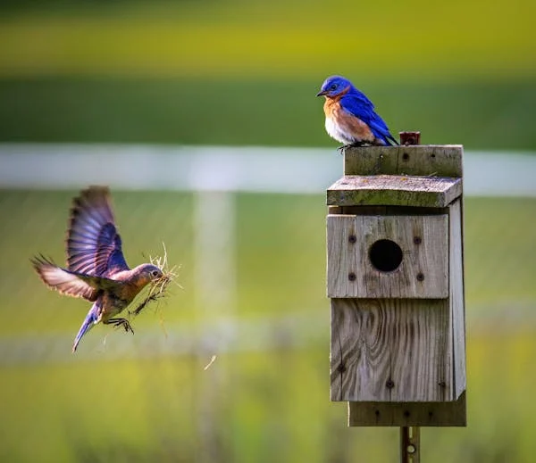

 


Unveiling nature's wonders. One click at a time. Explore the wild through wildlife photography.
Capture the untamed beauty.
Witness the magic of wildlife moments frozen in time. Explore with us.
In an effort to preserve the delicate ecosystem of Kosciuszko National Park, top scientists are urging the New South Wales (NSW) government to commit to a cull of the feral horse population, also known as brumbies.
Millions of species of fauna and flora inhabit this vibrant and diverse world we live in.Sometimes we don't even remember that there is nature beyond our cities and our comfort zone.there is so much wildlife to captivate and capture. thankfully photographers can share the beauty of this world and bring us the wildlife scenes of animals that we would have otherwise never known.
